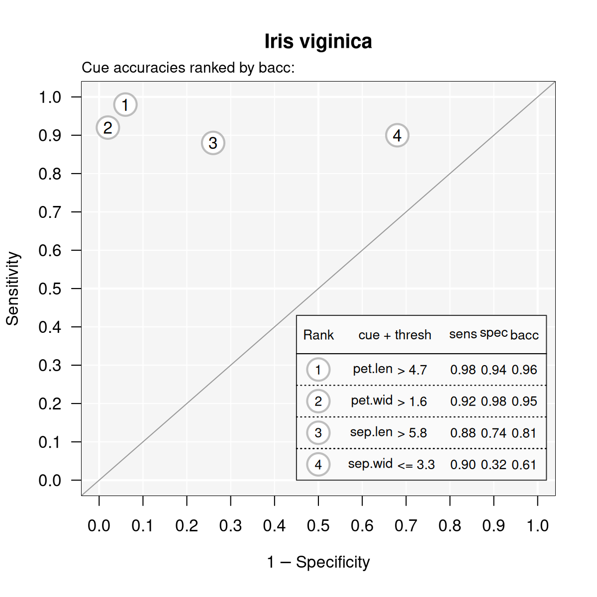

Examples of FFTrees
Nathaniel Phillips and Hansjörg Neth
2024-09-04
Source:vignettes/FFTrees_examples.Rmd
FFTrees_examples.RmdExamples of FFTs with FFTrees
This vignette illustrates how to construct fast-and-frugal trees (FFTs) for additional datasets included in the FFTrees package. (See Phillips et al., 2017, for a comparison across 10 real-world datasets.)
Mushrooms data

The mushrooms dataset contains data about mushrooms (see
?mushrooms for details). The goal of our model is to
predict which mushrooms are poisonous based on 22 cues
ranging from the mushroom’s odor, color, etc.
Here are the first few rows and a subset of 10 potential predictors
of the mushrooms data:
| poisonous | cshape | csurface | ccolor | bruises | odor | vcolor | ringnum | ringtype | sporepc | population | habitat |
|---|---|---|---|---|---|---|---|---|---|---|---|
| TRUE | x | s | n | TRUE | p | w | o | p | k | s | u |
| FALSE | x | s | y | TRUE | a | w | o | p | n | n | g |
| FALSE | b | s | w | TRUE | l | w | o | p | n | n | m |
| TRUE | x | y | w | TRUE | p | w | o | p | k | s | u |
| FALSE | x | s | g | FALSE | n | w | o | e | n | a | g |
| FALSE | x | y | y | TRUE | a | w | o | p | k | n | g |
Creating FFTs
Let’s create some trees using FFTrees()! We’ll use the
train.p = .50 argument to split the original data into a
% training
set and a
% testing
set:
# Create FFTs from the mushrooms data:
set.seed(1) # for replicability of the training / test data split
mushrooms_fft <- FFTrees(formula = poisonous ~.,
data = mushrooms,
train.p = .50, # split data into 50:50 training/test subsets
main = "Mushrooms",
decision.labels = c("Safe", "Poison"))Here’s basic information about the best performing FFT (Tree #1):
# Print information about the best tree (during training):
print(mushrooms_fft)#> Mushrooms
#> FFTrees
#> - Trees: 6 fast-and-frugal trees predicting poisonous
#> - Cost of outcomes: hi = 0, fa = 1, mi = 1, cr = 0
#> - Cost of cues:
#> cshape csurface ccolor bruises odor gattach gspace
#> 1 1 1 1 1 1 1
#> gsize gcolor sshape sroot ssaring ssbring scaring
#> 1 1 1 1 1 1 1
#> scbring vtype vcolor ringnum ringtype sporepc population
#> 1 1 1 1 1 1 1
#> habitat
#> 1
#>
#> FFT #1: Definition
#> [1] If odor != {f,s,y,p,c,m}, decide Safe.
#> [2] If sporepc = {h,w,r}, decide Poison, otherwise, decide Safe.
#>
#> FFT #1: Training Accuracy
#> Training data: N = 4,062, Pos (+) = 1,958 (48%)
#>
#> | | True + | True - | Totals:
#> |----------|----------|----------|
#> | Decide + | hi 1,683 | fa 0 | 1,683
#> | Decide - | mi 275 | cr 2,104 | 2,379
#> |----------|----------|----------|
#> Totals: 1,958 2,104 N = 4,062
#>
#> acc = 93.2% ppv = 100.0% npv = 88.4%
#> bacc = 93.0% sens = 86.0% spec = 100.0%
#>
#> FFT #1: Training Speed, Frugality, and Cost
#> mcu = 1.47, pci = 0.93
#> cost_dec = 0.068, cost_cue = 1.469, cost = 1.537Visualizing cue accuracies
Let’s look at the individual cue training accuracies with
plot(fft, what = "cues"):
# Plot the cue accuracies of an FFTrees object:
plot(mushrooms_fft, what = "cues")#> Plotting cue training statistics:
#> — Cue accuracies ranked by bacc
#> It looks like the cues oder and sporepc are
the best predictors. In fact, the single cue odor has a hit
rate
of %
and a false alarm rate of
nearly %!
Based on this, we should expect the final trees to use just these
cues.
Visualizing FFT performance
Now let’s plot the performance of the best training tree when applied to the test data:
# Plot the best FFT (for test data):
plot(mushrooms_fft, data = "test")
Indeed, it looks like the best tree only uses the odor
and sporepc cues. In our test dataset, the tree had a
false alarm rate
of %
( specificity),
and a sensitivity (aka. hit rate)
of %.
Trading off prediction errors
When considering the implications of our predictions, the fact that
our FFT incurs many misses, but no false alarms, is problematic: Given
our current task, failing to detect poisonous mushrooms has usually more
serious consequences than falsely classifying some as poisonous. To
change the balance between both possible errors, we can select another
tree from the set of FFTs. In this case, FFT #2 would use the same two
cues, but alter their exit structure so that our prediction incurs false
alarms, but no misses. Alternatively, we could re-generate a new set of
FFTs with a higher sensitivity weight value (e.g., increase the default
value of sens.w = .50 to sens.w = .67) and
optimize the FFTs’ weighted accuracy wacc.
An alternative FFT
Let’s assume that a famous mushroom expert insists that our FFT is
using the wrong cues. According to her, the best predictors for
poisonous mushrooms are ringtype and ringnum.
To test this, we build a set of FFTs from only these cues and check how
they perform relative to our initial tree:
# Create trees using only the ringtype and ringnum cues:
mushrooms_ring_fft <- FFTrees(formula = poisonous ~ ringtype + ringnum,
data = mushrooms,
train.p = .50,
main = "Mushrooms (ring cues)",
decision.labels = c("Safe", "Poison"))Again, we plot the best training tree, when predicting the cases in the test dataset:
# Plotting the best training FFT (for test data):
plot(mushrooms_ring_fft, data = "test")
As we can see, this tree (in mushrooms_ring_fft) has
both sensitivity and specificity values of
around %,
but does not perform as well as our earlier one (in
mushrooms_fft). This suggests that we should discard the
expert’s advice and primarily rely on the odor
and sporepc cues.
Iris.v data

The iris.v dataset contains data about 150 flowers (see
?iris.v). Our goal is to predict which flowers are of the
class Virginica. In this example, we’ll create trees using the
entire dataset (without splitting the available data into explicit
training vs. test subsets), so that we are really fitting the data,
rather than engaging in genuine prediction:
# Create FFTrees object for iris data:
iris_fft <- FFTrees(formula = virginica ~.,
data = iris.v,
main = "Iris viginica",
decision.labels = c("Not-Vir", "Vir"))The FFTrees package provides various functions to
inspect the FFTrees object iris_fft. For
summary information on the best training tree, we can print the
FTrees object (by evaluating iris_fft or
print(iris_fft)). Alternatively, we could visualize the
tree (via plot(iris_fft)) or summarize the
FFTrees object (via summary(iris_fft)):
# Inspect resulting FFTs:
print(iris_fft) # summarize best training tree
plot(iris_fft) # visualize best training tree
summary(iris_fft) # summarize FFTrees objectHowever, let’s first take a look at the individual training cue accuracies…
Visualizing cue accuracies
We can plot the training cue accuracies during training by specifying
what = "cues":
# Plot cue values:
plot(iris_fft, what = "cues")#> Plotting cue training statistics:
#> — Cue accuracies ranked by bacc
#> 
It looks like the two cues pet.len
and pet.wid are the best predictors for this dataset. Based
on this insight, we should expect the final trees will likely use one or
both of these cues.
Visualizing FFT performance
Now let’s visualize the best tree:
# Plot best FFT:
plot(iris_fft)Indeed, it turns out that the best tree only uses
the pet.len and pet.wid cues (in that order).
For this data, the fitted tree exhibits a performance with a sensitivity
of 100% and a specificity of 94%.
Viewing alternative FFTs
Now, this tree did quite well, but what if someone wanted a tree with the lowest possible false alarm rate? If we inspect the ROC plot in the bottom right corner of the figure, we see that Tree #2 has a specificity close to 100%. Let’s plot this tree:
# Plot FFT #2:
plot(iris_fft, tree = 2)
As we can see, this tree does indeed have a higher specificity (of 98%), but this increase comes at a cost of a lower sensitivity (of 90%). Such trade-offs between conflicting measures are inevitable when fitting and predicting real-world data. Importantly, using FFTs and the FFTrees package help us to render such trade-offs more transparent.
Titanic data
For examples that predict people’s survival of the Titanic
disaster (by growing FFTs for the titanic data), see the Visualizing FFTs vignette.
Vignettes
Here is a complete list of the vignettes available in the FFTrees package:
| Vignette | Description | |
|---|---|---|
| Main guide: FFTrees overview | An overview of the FFTrees package | |
| 1 | Tutorial: FFTs for heart disease | An example of using FFTrees() to model
heart disease diagnosis |
| 2 | Accuracy statistics | Definitions of accuracy statistics used throughout the package |
| 3 | Creating FFTs with FFTrees() | Details on the main FFTrees()
function |
| 4 | Manually specifying FFTs | How to directly create FFTs without using the built-in algorithms |
| 5 | Visualizing FFTs | Plotting FFTrees objects, from full trees
to icon arrays |
| 6 | Examples of FFTs | Examples of FFTs from different datasets contained in the package |